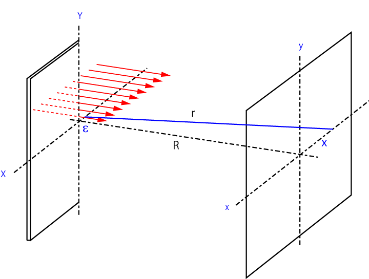

回折-32
ナイフエッジからの回折-32
次に，ナイフエッジからの回折を計算してみましょう．
この計算は，
光学入門
の本を参考にしました．また，フレネル積分については，
高校数学の美しい物語
フレネル積分の計算
などを参考にしました，ありがとうございます．
一般論
まずは，適当な形状を通過する光を考えましょう．

XY平面に任意の形状の穴を設定します．距離Rだけ離れた投影面の任意の座標(x,y)の光強度を求めます．
今回はｘのみの一次元で考えます．
と同様に考えます（一次元であり，文字が少し変わってきます）
光の振動数を，ω，とすれば，その波形は，
\(\Large \sin ( \omega t - phase ) \)
となります．
位相 ＝ 光路÷波長×2π
となるので，
\(\Large phase = \frac{r}{\lambda} \times 2 \pi = k r \)
となります．ここで，ｋ，は波数です．従って，
\(\Large \sin ( \omega t - phase ) = \sin ( \omega t - k r ) \)
となります．光強度をE0，とすると，投影面での強度は距離zに反比例しますので，任意の開口の一部のエリアｄSからの発せられる光は，
\(\Large dE = \frac{E_0}{z} \sin ( \omega t - k r ) ds \)
となります．指数表示に変換すると，
\(\Large dE = \frac{E_0}{z} e^{i ( \omega t - k r )} ds \)
となります．
次に，開口の(X, Y)から投影面(x,y)の2点間の距離を求めましょう．ここから少し変わってきます．距離ｒは，
\(\Large r = \sqrt{ (X-x)^2 + R^2} \)
となります．少し書き換えて，
\(\Large r = R \ \sqrt{ 1 + \frac{(X-x)^2}{R^2}} \)
となります．これを展開すると，
\(\Large r = R + \frac{1}{2} \frac{(X-x)^2}{R} \)
と簡単にできます．したがって，開口部で一元で積分すると，
\(\Large \begin{eqnarray} u(x)
&=& \int_{0}^{\infty} \frac{u_0}{z} e^{i ( \omega t - k (R + \frac{1}{2} \frac{(X-x)^2}{R} )} dx \\
& \fallingdotseq & \int_{0}^{\infty} e^{\frac{i \pi}{\lambda R} (X-x)^2} dx \\
\end{eqnarray} \)
となります．下の式への移行は，
定数項を無視した
波数を波長に戻した
です．
次ページにフレネル積分を導入していきましょう．